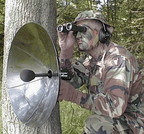
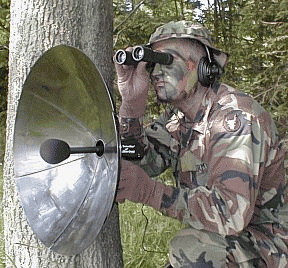
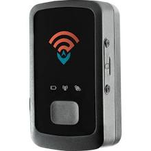
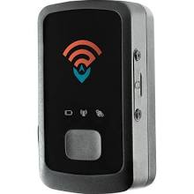
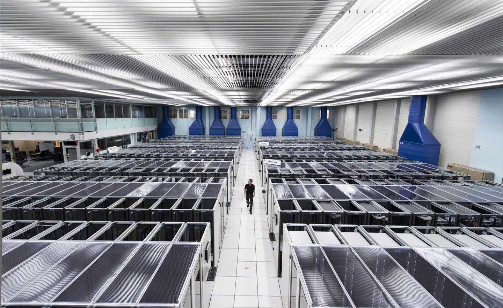
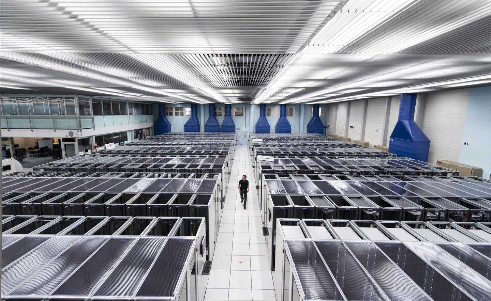

Professional Audio Recording Equipment
Depicted is the Detect Ear Parabolic Microphone System

Depicted is the Detect Ear Parabolic Microphone System

The Detect Ear Parabolic Microphone System is a professional grade listening device that will let you hear conversation with pinpoint accuracy up to 300 yards.~EyeSpyPro
Professional Video Recording Equipment
Depicted is the Telescopic Industrial Video Inspection Camera System

Depicted is the Telescopic Industrial Video Inspection Camera System
Vividia™ telescopic inspection camera systems (Model: TVS-300 and TVS-300DVR) have a strong and extendable pole, high resolution camera and video viewing system. They are convenient for tasks such as roof and building inspections, aerial photography, inventory checks, gutter cleaning, wildlife surveying, tunnel and manhole inspection, heavy equipment inspection etc. The rigid flexible camera neck is very convenient to adjust the direction of the camera. The model TVS-300DVR has recording functions, so you can take pictures and videos, and save the files on a SD card. There are 12 high intensity LED lights on the front of the camera. The camera can see more than 5 meters under total darkness with the lights on. The camera is IP68 waterproof. The maximum total length of the pole is more than 310 cm (>10 feet).~Oasis Scientific Inc.
Professional Vehicle Trackers
Depicted is the STI_GL300 Mini Portable Real Time GPS Tracker

Depicted is the STI_GL300 Mini Portable Real Time GPS Tracker

The GL-300 was a piece of junk !! Quit taking a charge after about 6 months. The website was nice, for looking back !! I NEVER got this device/website to give me live data !! Live data is what I was lookn for. I Could not drive and follow the GL-300 device. I could never get anyone live or email to help me thru the problem live. I would not recommend this product to anybody. If you do good luck !!!~Unsatisfied Walmart Customer
Cyber Surveillance Infrastructure
Depicted is Chuck's personal home computer that he uses from time to time to help solve cases

Depicted is Chuck's personal home computer that he uses from time to time to help solve cases

The Data Centre processes about one petabyte of data every day - the equivalent of around 210,000 DVDs. The centre hosts 11,000 servers with 100,000 processor cores. Some 6000 changes in the database are performed every second.~CERN
The Grid runs more than two million jobs per day. At peak rates, 10 gigabytes of data may be transferred from its servers every second.